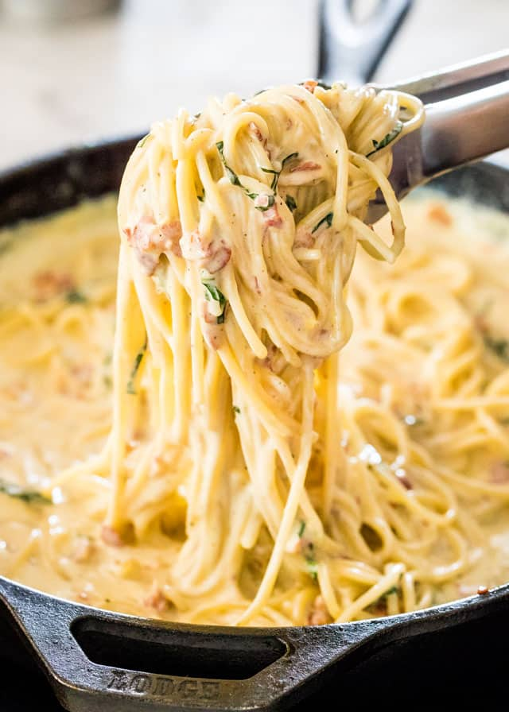

carbonara

description
A lot of people are okay, with being mediocre nowadays. People are actually proud, or think it's funny and/or cute that they can't cook. I am here to inform you that, that frame of thinking is completely bogus. Learning things is cool, and if you want to be really cool, making a perfect carbonara for a friend, a date or even a family member will remind others why you are, indeed, better than them! Here is what you'll need:
- egg yolk
- parmesan
- bacon/pancetta grease
- pancetta
- half & half
- spaghetti or linguinie noodles
- pepper
- basil
steps
- prepare the pasta: in a large pot, add water and heavily salt. bring to a boil. add the past and cook to preference, al dente being preferred. drain and set aside.
- crisp the pancetta: add the pancetta to a large skillet and saute over medium heat until crispy. transfer the pancetta to a different container with a slotted spoon
- sauce:add half & half to a skillet, allow to simmer. whisk egg yolks into the sauce, soon followed by the parmesan cheese. stir in black pepper, salt to taste.
- finish the carbonara by adding spaghetti, bacon and basil to the skillet and combine. garnish with more cheese, more basil.